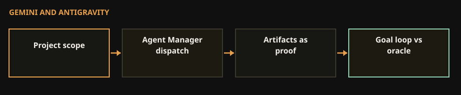
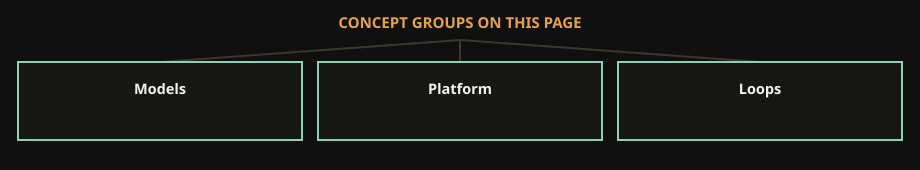

Gemini and Antigravity
Antigravity power use treats the human as an architect. Agents work across editor, terminal and browser, and return Artifacts as proof.

Version facts
Gemini 3 Pro and Antigravity launch date: 18 November 2025, official Google post. Gemini 4 Argon GA date in API summaries: 13 October 2026. Gemini 4 Carbon announcement date: 28 October 2026. High
Antigravity 2.0 splits into four parts: a standalone app, an IDE, a CLI named agy, and an SDK. A Project names a folder set. That folder set defines agent scope and rights. Medium to High
Gemini 3.5 Pro trap. Google announced the model in May 2026. Flash shipped. Pro never sat in API model lists in tracker checks. A Reuters report via one secondary source says Google no longer plans a ship. Treat the word cancelled as a report, not as a Google fact. Medium Low
Named DeepMind engineer personal workflows: no verified source in this build. Google public material sits at product and team level. INSUFFICIENT_EVIDENCE
Workflow A1. Agent Manager and Artifacts
- Define a Project. Folders in the Project mark the agent work area.
- Dispatch a task in Agent Manager, not in the editor.
- Agents work across editor, terminal and browser.
- Agents return Artifacts: task lists, plans, screenshots and browser records.
- Comment on an Artifact, on a screenshot or on a record, in place of a fresh prompt.
- Open the editor only for a set diff.
Workflow A2. Goal loop with an oracle the agent cannot weaken
- Write a contract as tests first. Add a verify script. Start state must fail.
- Give one goal sentence. Name the deliverable, the limits and the pass rule.
- The goal command writes a plan and starts work.
- The agent loops: act, run tests, repair.
- The loop stops at a pass from both test commands.
- Read the Walkthrough Artifact as an audit trail.
Principle. Autonomy stays safe to the extent that an oracle stays objective and out of agent edit reach.
Workflow A3. Dynamic Workflows
- Describe an outcome.
- The agent reads a run-workflow skill and writes a short Python script with named phases.
- A human reviews and approves the script.
- The script fans work to parallel subagents and collects firm results.
- Work runs in background tasks. The main agent reads logs and gives a summary.
One tutorial source dated November 2026 carries this workflow. Pro and Ultra tiers only per that source. Medium Low, single source
Workflow A4. Research to deck with tool chains
Google October 2026 examples show subagents with a Blender MCP and image tools turn desk photos into a playable 3D track, and parse over 80,000 NASA files into an exec deck with a firm slide template. Vendor demos prove a pattern, not a capability level: chain tools, and use a template as a limit. Medium
Hidden features and risks
- Thought signatures must persist across multi turn agent calls, or reason quality drops per the official Gemini 3 dev post.
- Grounding with Search can pair with firm outputs for fetch, extract and emit pipelines.
- Review sites report early prompt injection and sandbox faults, a disk loss report, and quota cuts with no notice. Teach least privilege folders, backups and a preview agent.
Tutorial in eight parts
1. Question
How can a solo engineer trust an Antigravity goal loop on a real repo?
2. Key facts
Agent Manager, Artifacts and Projects sit in official Codelabs and launch posts. The goal loop with tests sits in a GDE sprint codelab.
3. Core concepts
Project, Artifact, oracle, Walkthrough. An Artifact forms review evidence. An oracle forms a pass rule with no agent edit rights.
4. Patterns and feedback loops
Dispatch, plan, act, test, repair, review Artifact. Comments on Artifacts steer the next loop round.
5. Conflicts and common errors
A common error lets an agent edit tests to reach a pass. Lock tests before a run. A second error gives a Project full disk scope.
6. Hypotheses
Dynamic Workflows may beat chat loops for repeat fan out work. One source supports the claim set. Treat gains as a test target, not as a fact.
7. Decision support
Use Antigravity for browser heavy and multi tool work with Artifacts. Use a terminal agent for small repo tasks with a tight test set.
8. One bounded next action
Run one goal loop on a toy repo. Write two test files and one verify script. Lock test files. Record time to pass and error count.

Visual map of this page
Three views of one page: a Mermaid flow for work order, a markmap for concept groups, and a read guide for the flow.
Mermaid source, for offline read
flowchart TD A[Project folders] --> B[Dispatch in Agent Manager] B --> C[Agent: editor, terminal, browser] C --> D[Artifacts] D --> E[Comment on artifact] E --> B C --> F[Tests as oracle] F -->|pass| G[Done]
How to read the flow diagram. Step 1: start at the left box. Step 2: follow each arrow to the next stage. Step 3: at a branch box, read both paths before a choice. Step 4: a loop arrow means work returns for one more pass vs a test.
Markmap: concepts on this page
- Gemini and Antigravity
- Models
- Gemini 3 Pro launch
- 4 Argon GA
- 4 Carbon announced
- 3.5 Pro never shipped
- Platform
- App, IDE, CLI, SDK
- Projects set scope
- Loops
- Agent Manager
- Goal plus oracle
- Dynamic Workflows
- Models